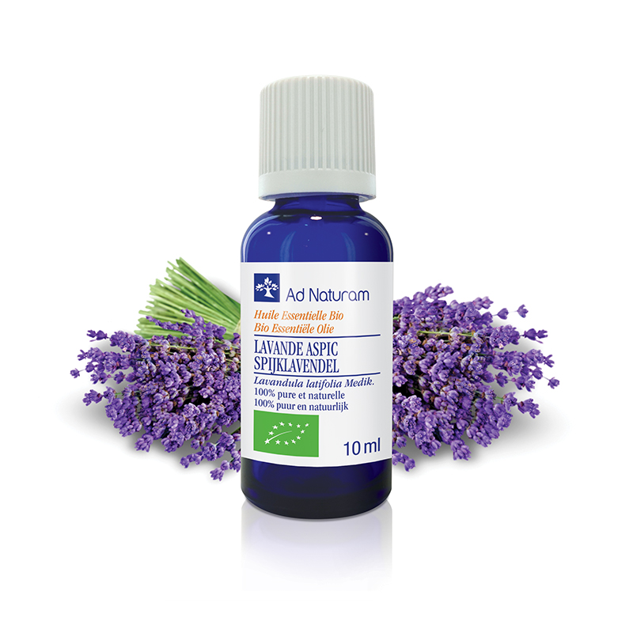
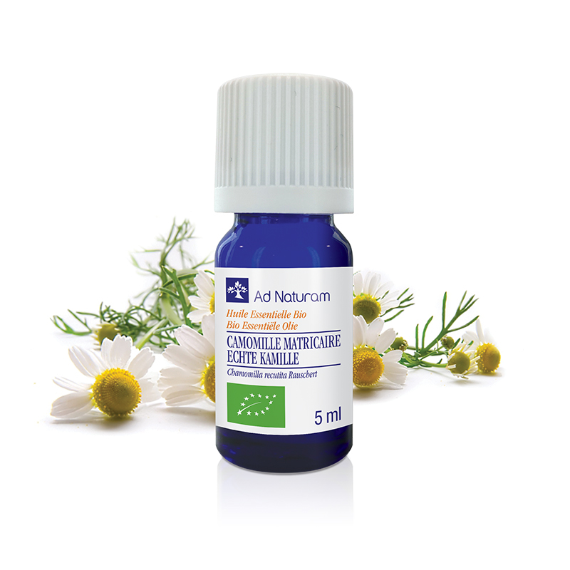
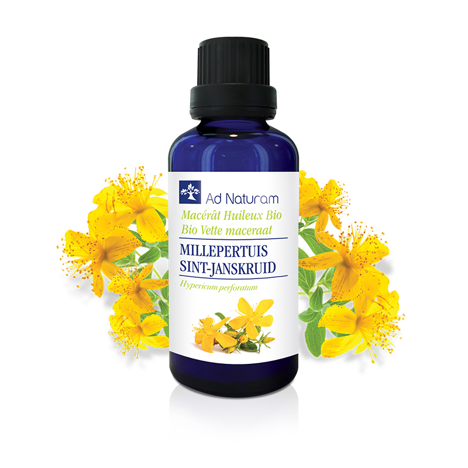
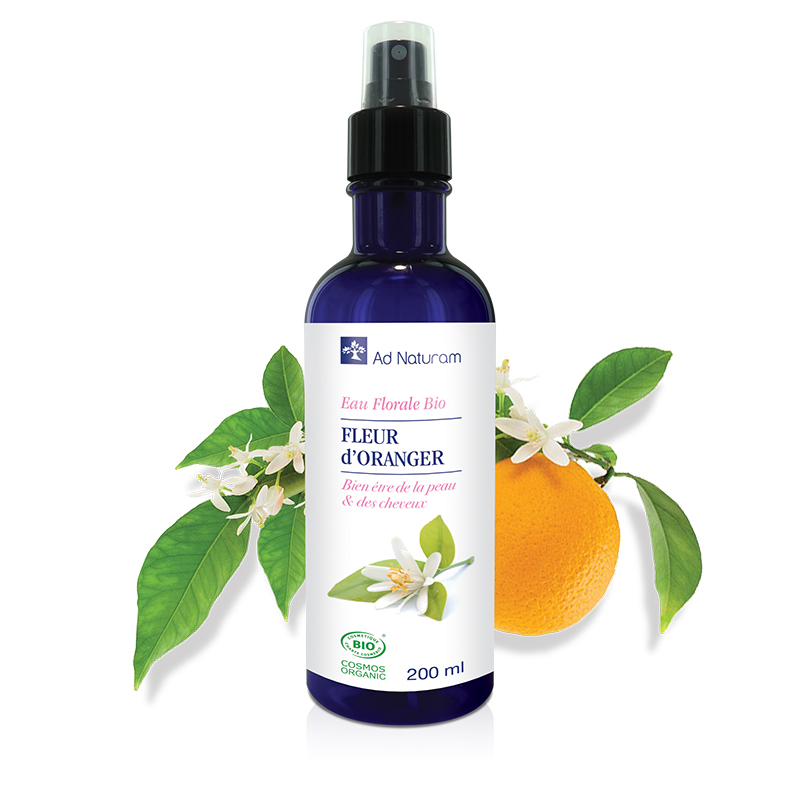
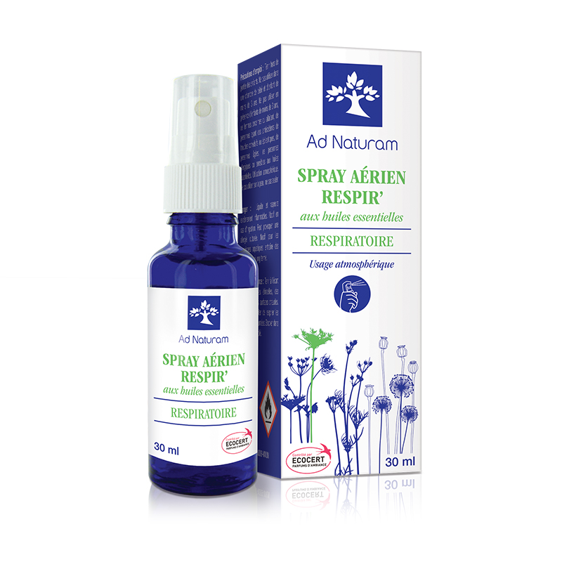

PREMIUM SELECTION





法國 | 有機 | 永續
源自法國南部的有機芳療品牌，長期專注於有機精油與植物芳療產品。品牌透過全球產地採購，與各地蒸餾與栽種生產者建立長期合作，原料來自法國、印度、埃及、南非等多個芳香植物產地，確保每一滴精油皆具備來源透明與可追溯性。
Ad Naturam 堅持以短鏈供應模式直接與產地合作，減少中間環節，並透過實驗室分析與批次品質檢測，確保精油的純度與穩定性，從原料到裝瓶皆符合嚴格品質標準。
品牌同時取得多項國際有機與品質認證，包括 ECOCERT、COSMOS、AB 有機標章，以及公平貿易認證 Fair For Life，並提供 HEBBD（植物學與生化成分鑑定）等專業品質檢測，確保產品純淨、天然且符合芳療專業使用標準。
憑藉超過二十年的有機精油採購與研發經驗，Ad Naturam 已與全球超過百家植物生產者合作，致力於以永續方式提供高品質植物精油，並將自然與科學結合，打造更安全且值得信賴的芳療選擇。
此外，Ad Naturam 精油亦通過 AHIS 嗅覺反應分析體系認證，可依據個人身心狀態進行分類與應用，使精油選擇更具個人化與專業性。

CORE VALUES

COMMITMENT
Ad Naturam 重視植物來源與產地選擇，透過實地走訪與直接合作，確保原料品質、純淨度與可追溯性。

VALUES
品牌與各地生產者建立穩定且透明的合作模式，重視土地、植物與人之間的連結關係。

QUALITY
從原料到製程皆採高標準品質控管，並透過專業分析確保產品的穩定性與可信度。

SUSTAINABILITY
以永續為核心理念，尊重自然資源，並推動更友善環境且公平合作的生產方式。
COLLABORATION
AromaFonda 為 Ad Naturam
台灣獨家代理，將來自法國南部的有機植物香氣帶入台灣。
我們之所以選擇 Ad Naturam，不僅因其嚴謹的認證與透明來源，更因品牌對自然本質與身心平衡的理念，與
AromaFonda 高度契合。

歡迎透過 AromaFonda 進一步了解產品資訊，
Ad Naturam Taiwan 官方網站也將於近期上線。